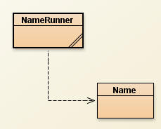

Objects are more than just a way of grouping data together. The second major feature of objects is that they also have methods that have the instance fields available to them. These methods are added by the designer to make the object easier to work with.
For example: Strings are objects that store many characters, but Strings also have methods that will tell you something about the instance fields. The most common one that we use is the substring method. The way that substring can work so well is that it has direct access to all of the characters of the String.
In reality, we don't have direct access to the instance fields of a String. The substring method helps us by telling us information that we want to know about the String.
Previously:

In the last assignment, we were designing the Name object below:
public class Name
{
public String first;
public String last;
public Name(String f, String l)
{
first = f;
last = l;
}
}
- A Name object will have two instance fields, Strings for the first name and the last name.
- Name's constructor takes in two Strings as parameters. Those Strings get applied to the instance fields. The constructor is what makes it ok to write: Name n = new Name("Ian", "Sacco"); and have the first and last names end up in the appropriate instance fields.
The NameRunner class constructs a Name object using a custom constructor and then prints out the first and last name
public class NameRunner
{
public static void main()
{
Name n = new Name("Marty","McFly");
System.out.println("First Name: "+n.first);
System.out.println("Last Name: "+n.last);
Name n2 = new Name("Jon","Snow");
System.out.println("First Name: "+n2.first);
System.out.println("Last Name: "+n2.last);
}
}
We've been cheating a little bit. Accessing the variables directly using c.make or c.model is allowed when you have public instance fields. This is a problem because part of designing good higher level objects, you must have more control over the instance fields.
All instance fields must be private:
Our first Name object had public instance fields which made it easier to see how the instance fields worked. In some programming languages, it's common to use objects like this, but in this class we're going to always make our instance fields private. This forces us to think a little more about how to access the instance fields.
Go to the name class and make the instance fields private.
public class Name
{
private String first;
private String last;
public Name(String f, String l)
{
first = f;
last = l;
}
}
This won't cause any problems in the Name class, but the NameRunner class will not compile. Now that the instance fields are private, they are no longer directly accessible. This means accessing n.first or n.last is no longer allowed.
WARNING!!!!! FOR THE REST OF THIS CLASS, EVERY INSTANCE FIELD THAT YOU CREATE IS REQUIRED TO BE PRIVATE. USING PUBLIC INSTANCE FIELDS WILL RESULT IN A LOSS OF CREDIT, EVEN IF IT PRODUCES THE PROPER RESULT.
Objects have methods!!!!
Objects do more than just bundle data together under one variable. They can also have methods. You've seen this before with Strings.
String str = "Hello World!!!"; System.out.println( str.substring(2,8) );
This code will print out "llo Wo".
The snippet above is using one of String's built in methods, named substring. These methods are different than the helper methods that we have been writing because they specifically deal with the instance fields of the object. For example, the substring method must have access to what characters are stored in a String in order to function.
Adding Accessor Methods to Name:
As the designer, we get to add any methods that we want. First we need to solve the problem of the private instance fields. Our previous programs printed out the Name's variables because they were public and easy to access, but now there's no way to retrieve them.
Our first Accessor Method: getFirst
The following line will no longer compile:
Name n = new Name("Han","Solo");
System.out.println("First Name: "+n.first);
This is because first is now private within Name. In reality, we have no way of knowing what's stored in the first variable, but we have the ability to add methods to the objects that we're designing. The first method that we are designing is called getFirst, and its job is to simply return what's stored in first.
Once we've finished writing the getFirst method, we will be able to use methods to acccess the first variable like so:
Name n = new Name("Han","Solo");
String f = n.getFirst();
System.out.println("First Name: "+f);
or, we can put it all in one line.
Name n = new Name("Han","Solo");
System.out.println("First Name: "+n.getFirst());
As you can see, instead of using n.first, which would access the first variable directly, we call the getFirst method, which will return the value stored in the first variable. This is a minor difference, but a necessary one if the instance fields are private.
Designing the getFirst method:
Just like the helper methods that we've written, we must be careful to think about the parameters and the return type:
- parameters: The purpose of this method is to simply return one of the instance fields. There will be no need for any parameters because all of the necessary information is stored in the instance fields.
- return type: The purpose of this method is to return the value stored in the first variable. Since first is a String, the return type is a String.
Now it's time to write the method header:
public String getFirst()
This method has a return type of a String and no parameters.
Where's the static?
We'll talk more about what static means later, but follow the simple rule:
If a method relies on instance fields, it's non-static.
Essentially every method that you write within an object should
be non-static. Others, such as your main methods, should be static.
Add the getFirst method to your Name class an you should have the following:
public class Name
{
private String first;
private String last;
public Name(String f, String l)
{
first = f;
last = l;
}
public String getFirst()
{
}
}
Access to the instance fields:
The getFirst method is non-static, meaning that it has access to the instance field of the object that it's a part of. In this case, we can do whatever we want to the first or last variables. This is similar to String objects, where methods like substring have access to all of the letters in a String.
Implementing the method (writing the code):
The getFirst method is supposed to return the value of the first variable, which is really easy since we have direct access to the instance fields. We don't even have to modify the instance field in any way. Add one line to your method:
public String getFirst()
{
return first;
}
This is a simple as a method can be.
What does this do?
As the designer of Name we want people to be able to know what's stored in the instance fields, but instance fields are private. Now that we have the getFirst method, any name variable can tell you the value stored in its first variable.
Name n = new Name("Han","Solo");
String f = n.getFirst();
System.out.println("First Name: "+f);
Accessing last:
Similar to before, let's add a method that will allow the client to access the last variable. Add the following method to the Name class:
public String getLast()
{
return last;
}
Modifying the Runner to use the getFirst and getLast methods:
BEFORE:
Notice that NameRunner previously used lines like n.first and
n.last, which will
not work now that the instance fields are private.
public class NameRunner
{
public static void main()
{
Name n = new Name("Marty","McFly");
System.out.println("First Name: "+n.first);
System.out.println("Last Name: "+n.last);
Name n2 = new Name("Jon","Snow");
System.out.println("First Name: "+n2.first);
System.out.println("Last Name: "+n2.last);
}
}
AFTER:
Instead of directly accessing the variable, use the appropriate Accessor Method instead:
public class NameRunner
{
public static void main()
{
Name n = new Name("Marty","McFly");
System.out.println("First Name: "+n.getFirst());
System.out.println("Last Name: "+n.getLast());
Name n2 = new Name("Jon","Snow");
System.out.println("First Name: "+n2.getFirst());
System.out.println("Last Name: "+n2.getLast());
}
}
Common Mistake:
Previously we've were accessing all of our instance fields directly with a line similar to the following:
System.out.println("First Name: "+ n.first);
This only works when the variables are public, which we are banned from doing.
To solve this problem we created the getFirst method. A common attempt to call this method look like the line below, which will not compile:
System.out.println("First Name: "+ n.getFirst);
Why won't this compile?
This is ALMOST correct. The problem is that n.first and n.getFirst look too similar. n.first would imply that there is a public instance field named first that we want to access directly. Similarly, n.getFirst implies that there is a public instance field named getFirst, which is not the case.
Methods ALWAYS have parentheses. It's the way that Java knows what we're talking about:
n.getFirst is attempting to access a public instance field named getFirst, which does not exist
n.getFirst() is attempting to call a public method named getFirst, which does exist. This is the appropriate way to call a method. It is a small, but important difference.
Assignment:
Now we're going to modify the objects that we've been making to have private instance fields and accessor methods to help access each of the variables.
1) Car:
First make the make and model instance fields private.
Add two accessor methods named getMake and getModel
Change the CarRunner to the following:
public class CarRunner
{
public static void main()
{
Car c = new Car("Ford","Mustang");
System.out.println("Make: "+c.getMake());
System.out.println("Model: "+c.getModel());
}
}
2) Modify Date so that the instance fields are private and there are three accessor methods (be careful, the return type is not a String). Once you've done that, modify the Runner to use the accessor methods instead of accessing the variables directly.
3) Modify Fraction so that the instance fields are private and there are two accessor methods (be careful, the return type is not a String). Once you've done that, modify the Runner to use the accessor methods instead of accessing the variables directly.
4) When storing colors in the computer, it is common to represent it using three ints form 0-255, each representing the levels of red, green, and blue. Create a class named Color. The Color class should have three ints as instance fields (red, green, and blue). Color's constructor should take in three ints as parameters and assign them to the appropriate instance fields. Add three accessor methods, getRed, getGreen, and getBlue which should return the corresponding color value.
After creating the Color class create a class named ColorRunner, which will have a single main method. That method should do the following:
- Construct a Color object with the values 0 for red, 100, for green, and 255
for blue.
- Use the accessor methods to print out the information in the red, green, and
blue instance fields in the form [Red: 0, Green: 100, Blue:255]